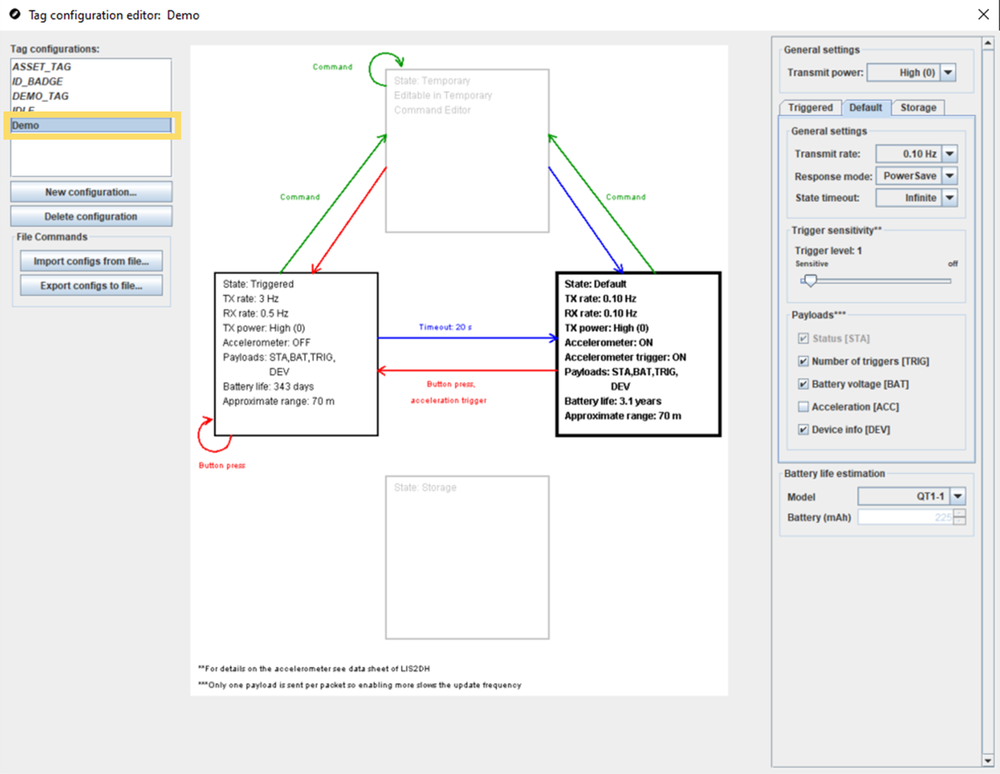
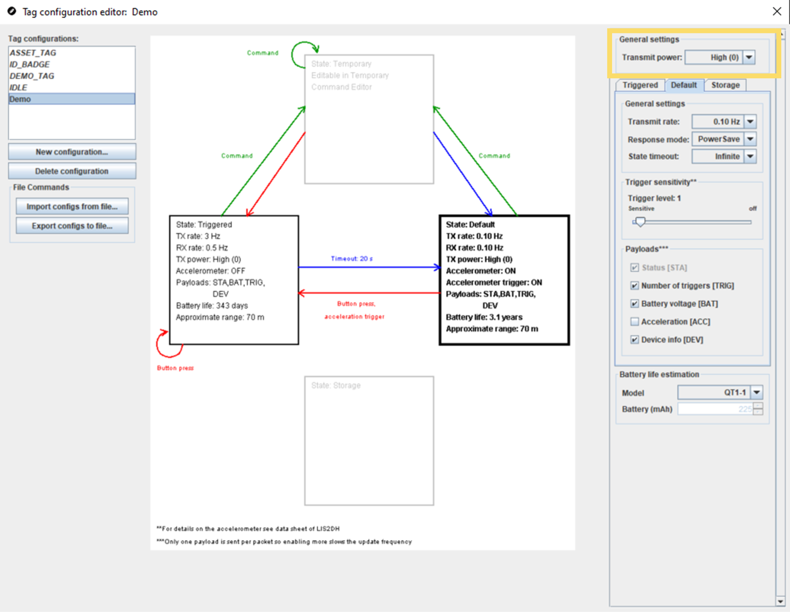

Edit Tag Tx Power
The Tag Tx Power feature allows users to adjust the strength of the signal sent by the tags. This feature is useful in cases where there is a lot of Bluetooth traffic that needs to be processed by the Locators. The feature allows the signal strength to be turned up, meaning that the Locator is more likely to receive the packet from the Tag over all of the other Bluetooth noise that it is receiving.
This feature is particularly effective when used together with the Locator Sensitivity feature. For more information about the Locator Sensitivity feature, please see the Edit Locator Sensitivity section.
The best way to find the optimal level for your case is to test different levels for your deployment environment. Before setting the Tag Tx Power level in the Tag Configurations, you can begin testing the levels using the coverage estimate tool. For more information on rendering coverage estimates, please see the Apply Coverage Estimate section.
Once you have determined a good level to test using the coverage estimate tool, you can change the tag configuration and start testing and validating the tag performance in a live deployment. To change the tag configuration, follow these steps:
- In the QSP, select the Tag Configuration Editor from the Deployment menu in the menu bar.
- Select the tags that you want to modify from the Tag
configurations menu in the top left.

- In the panel on the right, edit the Transmit power setting
as needed.

- Test the system in real life to assess whether further adjustments are needed.